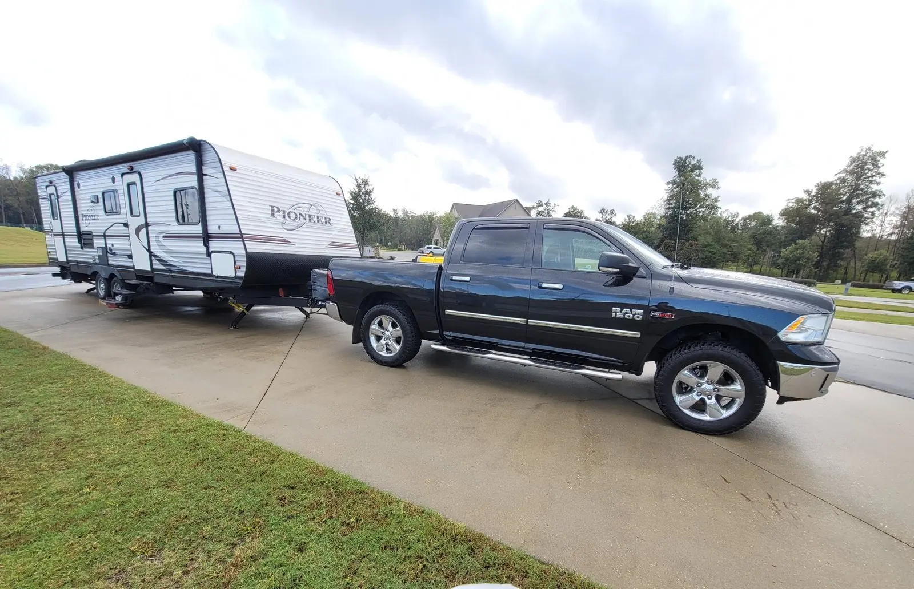
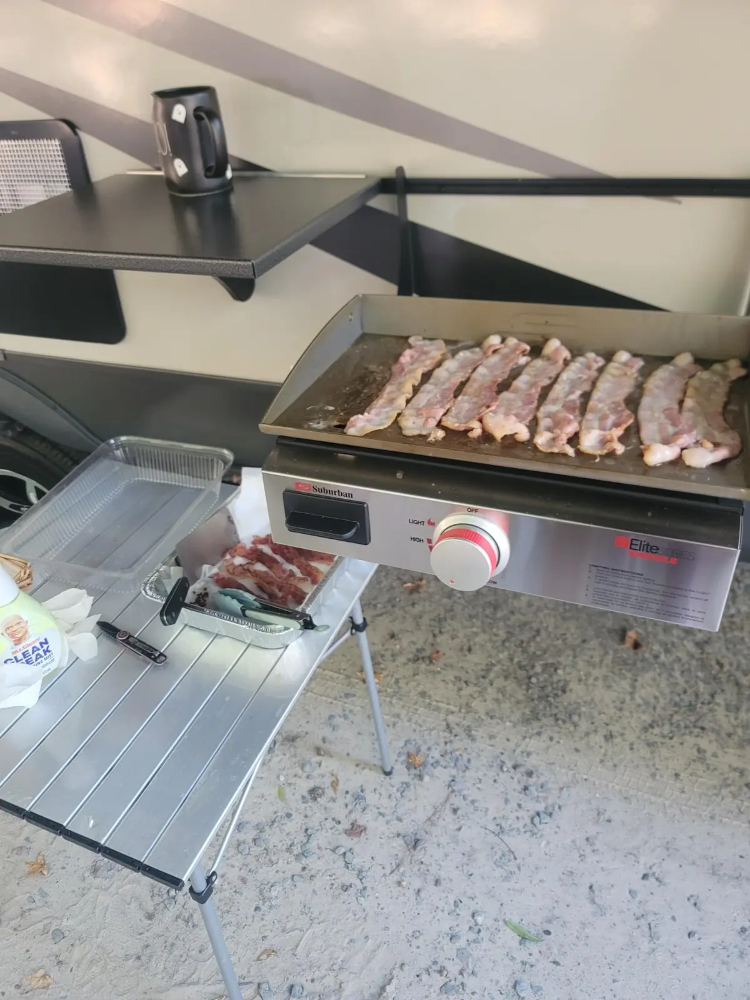
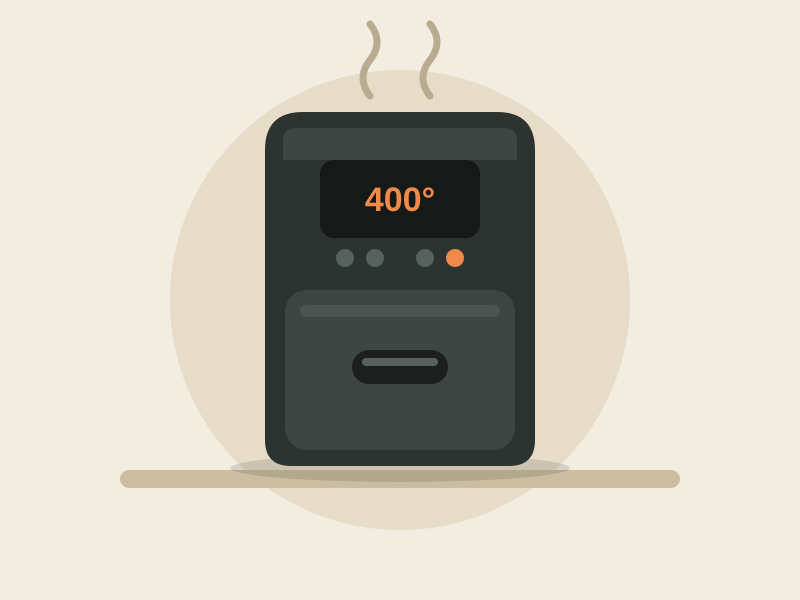
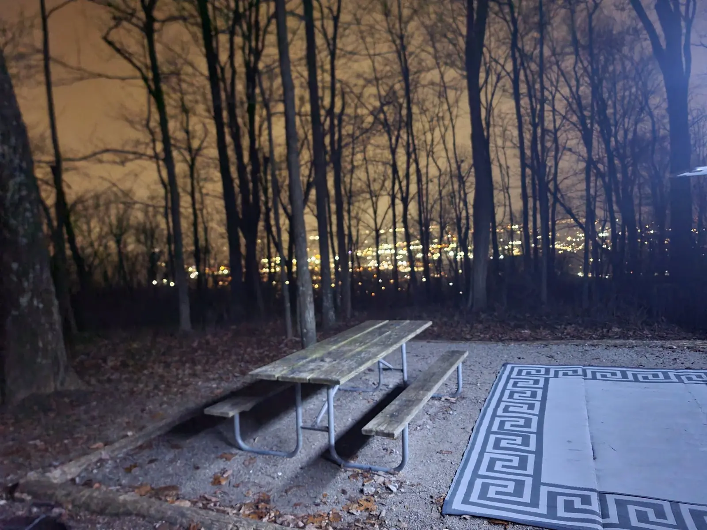
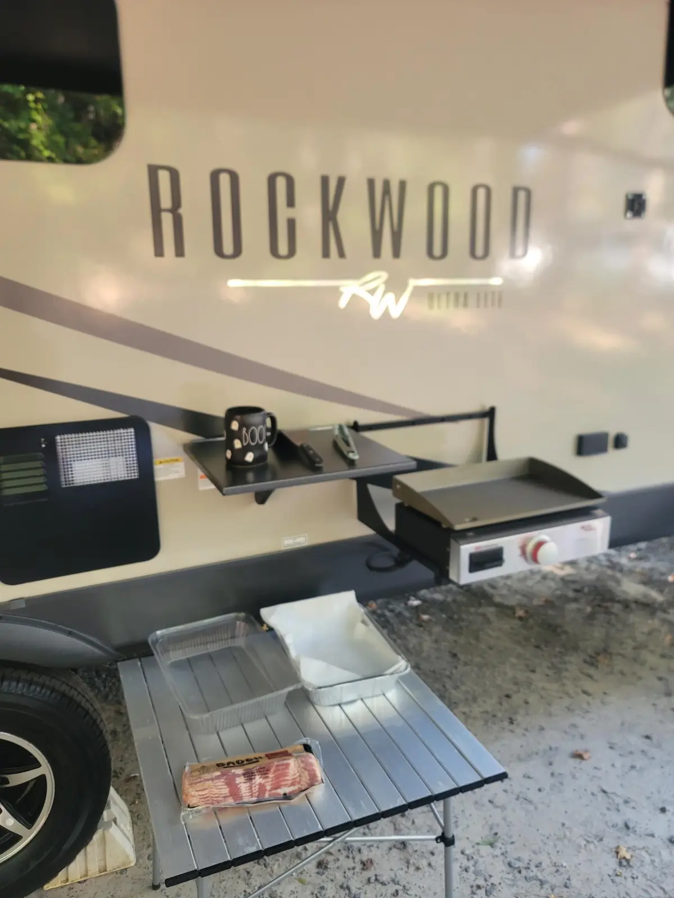
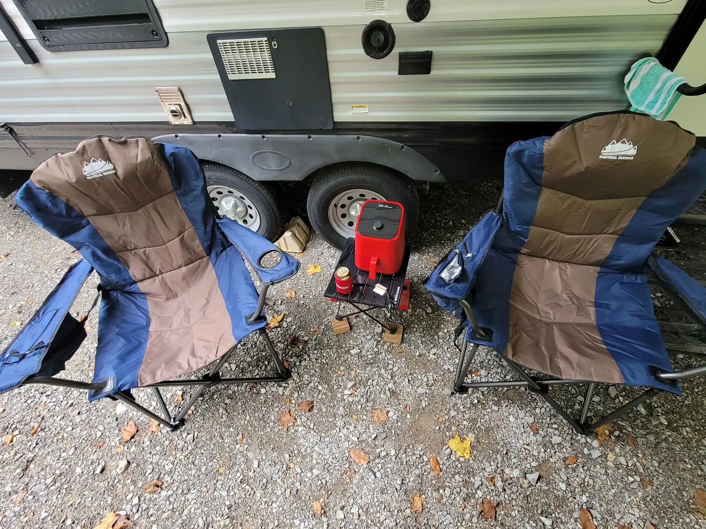
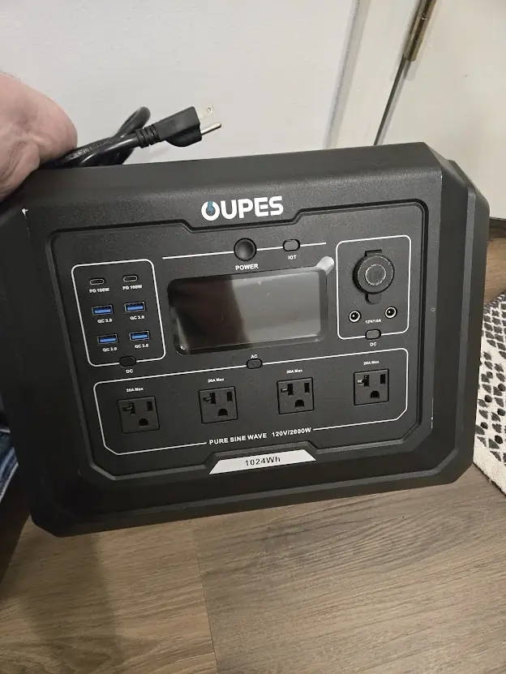
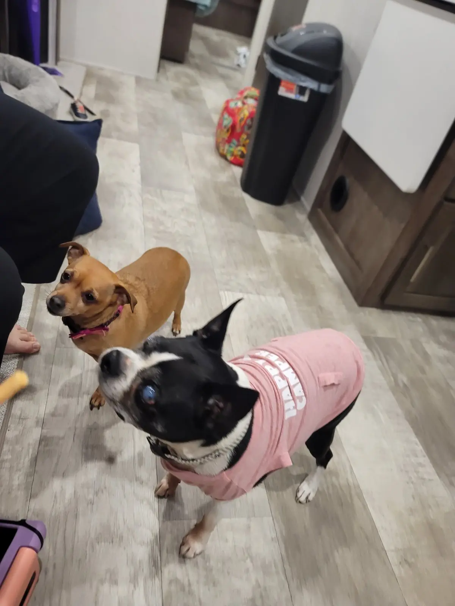

What We Pack Every Single Trip (Toddler + Dogs Edition)
The list we actually use, built over years of forgetting exactly one critical thing every trip. Kitchen, campsite, power, water, kid stuff, pup stuff, and the bins that make it all fit.

Disclosure: This post contains affiliate links. If you buy through our links we may earn a small commission at no extra cost to you. We only link gear we own and use.
There's a moment on every trip, usually about forty minutes down the highway, when one of us says, "Did you grab the…?" and the truck goes quiet. Over the years we've left behind dog leashes, sippy cups, the coffee filters (a dark day), and once, memorably, the sewer hose.
So we did what any reasonable family does after enough of those moments. We built a system. Most of our camper stays packed between trips, a few bins come in and out of the house, and a short checklist covers the rest. Here's all of it, including the two pieces of gear we'd buy again tomorrow.
Want the printable version?
We turned this into an interactive checklist you can tick off on your phone while you load up. Open the Family & Pup RV Checklist →
The system: stays-in-the-rig vs. comes-from-home
The biggest packing upgrade we ever made wasn't a product. It was deciding what lives in the camper. If we use something every trip, we buy a second one and it never leaves the rig. That cut our packing time in half and pretty much ended the forgotten-coffee-filter era.
Lives in the rig
Kitchen basics, bedding, toiletries, hoses, leveling blocks, outdoor rug, chairs, and the table.
Comes from home
Clothes, fridge food, meds, the kid bag, the dog bag, and devices.
Checked every time
Propane, fresh water, tire pressure, the surge protector, and a quick walk-around before we pull out.
The camp kitchen
We cook almost every meal at the campsite. Partly to save money, and partly because breakfast on the griddle with the dogs supervising is one of our favorite parts of camping.

The air fryer: our most-used appliance
If you'd told us years ago that an air fryer would earn a permanent spot in the camper, we'd have laughed. Now it's the first thing we plug in after the shore power. Chicken tenders for our little one, reheated leftovers that don't turn into rubber, frozen fries on a lazy night, and roasted veggies without heating up the whole camper in July. It's fast, it doesn't warm up the rig like the oven does, and cleanup is one basket.

Illustration. Our real one is in the camper right now.
We own itOur Air Fryer
The one that lives in our camper. Quick toddler meals, crispy leftovers, and no hot oven on summer trips.
Check priceRunning it on shore power
Air fryers pull a lot of power while they heat up. On a 30-amp site, don't run it at the same time as the air conditioner and the microwave. If the breaker trips, that's why. We just run them one at a time.
Kitchen bin (lives in the rig)
- Cookware: one skillet, one pot, griddle tools, a cutting board, and a good knife
- Coffee setup plus extra filters. We learned this one the hard way.
- Paper towels, foil, zip bags, and heavy trash bags
- Spices and oil in a small bin so nothing leaks on travel days
- Dish tub, soap, and a drying mat for washing up outside
- Kid plates and cups that survive being dropped on gravel
Setting up the campsite
Our goal at every site is the same: make the outside feel like a second living room. A rug, chairs, a real table, and some lights turn a gravel pad into the place everyone wants to hang out.

The aluminum roll-up table: the unsung hero
Campground picnic tables are hit or miss. Sometimes there isn't one, sometimes it's covered in sap, and sometimes it's on the wrong side of the site. Our aluminum roll-up table fixes all of that. It rolls up into a bag about the size of a camp chair, sets up in a minute, and gives us a clean surface right where we need it. It's our griddle prep station in the morning, our snack bar in the afternoon, and the place the air fryer goes when we cook outside. Aluminum also means it doesn't care about rain, spills, or a toddler with a juice box.

Our Aluminum Roll-Up Table
Rolls up small, sets up fast, and wipes clean. It's our prep station, snack bar, and air fryer stand.
Check priceOutdoor living bin
- Outdoor rug. Keeps the dirt (mostly) out of the camper.
- Camp chairs for everyone, including the little one
- String lights or awning lights so nobody trips over a leash in the dark
- Fire pit tools, a lighter, and a bag of fire starters
- Bug spray and citronella. Alabama summers don't play.
- A small tote of yard games for the kids' park days

Power, water, and the "don't skip it" gear
We wrote a whole post about the 11 days we lived off our camper after Hurricane Michael, and it changed how we pack. These ride along on every trip, even a one-night stop:

Oupes Mega 1 Power Station
Runs the fridge, the CPAP, and every device we own, quietly.
Check pricePower Watchdog 50A Surge Protector
Plugs in before anything else. Bad campground power can fry thousands in appliances.
Check priceInline RV Water Filter
A cheap barrier between the campground spigot and your family's water.
Check priceOur full power and water setup, including the Berkey and the solar panels, is on our Gear page.
The toddler bag
Camping with a little one is all about two things: routine and backups. Same bedtime, same lovey, same snacks, and at least one extra outfit within arm's reach at all times.
- Two extra outfits per day, because mud, splash pads, and syrup
- Pajamas and the bedtime lovey. Never, ever forget the lovey.
- Snacks, and then more snacks
- Sunscreen, a hat, and kid-safe bug spray
- Swim gear if there's a pool or splash pad
- A tablet with downloaded shows for travel days and rainy afternoons
- A small first aid kit with kid meds and bandages
- A night light so the camper doesn't feel strange at 2 a.m.
The dog bag
Our dogs think every campground was built just for them. Keeping them safe and happy on the road comes down to a few basics.

- Leashes, harnesses, and a tie-out cable for the campsite
- Food portioned in bags, plus treats for good behavior (theirs)
- Collapsible water and food bowls
- Poop bags. Pack double what you think you need.
- Their beds and a favorite blanket so the camper smells like home
- Vaccination records saved on your phone. Many campgrounds and dog parks ask for them.
- Towels for muddy paws before they hit the bed
- A light-up collar for night walks around the loop
Fireworks and storm nights
If your pup gets nervous, set up a quiet spot inside the camper before dark: crate, blanket, and some background noise. Ours prefers a lap, but a cozy hideout helps a lot of dogs.
The "stays in the truck" kit
- Tire pressure gauge and a portable air compressor
- Work gloves and a headlamp for hookups after dark
- A basic tool kit, zip ties, and duct tape
- Wheel chocks and leveling blocks
- A spare sewer hose seal. Ask us how we know.
What we always forget anyway
Even with the system, every family has its "thing." Ours used to be coffee filters, and now it's usually phone chargers for the truck. Our best advice: keep your checklist on your phone, walk it once before you pull out, and give the forgetful person in your family a job with zero packing responsibilities. (We won't say who.)
Packing isn't about bringing everything. It's about never being without the five things that keep everyone happy.
What's the one thing your family always forgets? Tell us. We might add it to the list.
— James & Mallory 🐾
11 Days, No Shore Power, No Problem
What Hurricane Michael taught us about RV ownership, and the gear that kept our family going when the grid didn't.